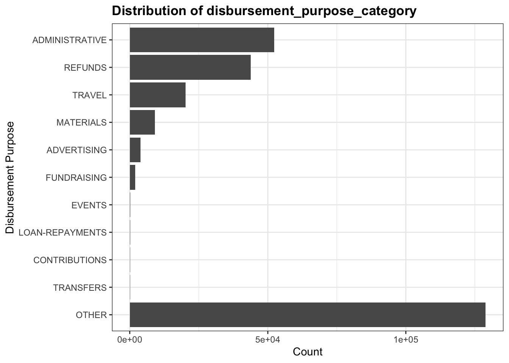
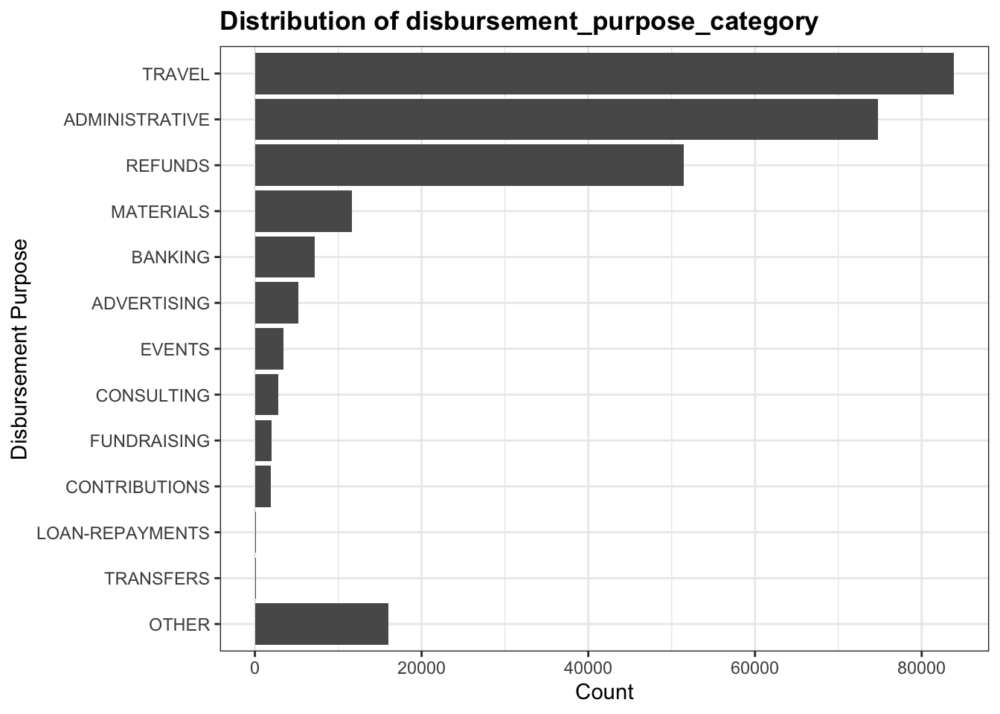

Chapter 3 Data transformation
Most of our small auxiliary datasets have been pre-processed by data providing authorities, hence, we focused on the pre-processing of the major datasets. Please go to our github repo chapter to see code in detail.
3.1 Election Result Data Transformation
For the election results data, we cleaned up two raw data: 1976-2016 historical election result and 2020 election popular vote share and vote margin.
First, to compare historical popular vote results for republicans on the state level, we cleaned this dataset in following steps:
- Select columns we needed. i.e.
year,state,partyandcandidatevotes. - Filter column
party. i.e. only contains democrats and republicans. - Add a new column
ratio, we define ratio = candidatevotes_xxx/(candidatevotes_democrat+candidatevotes_republican) - Filter column
party. i.e. only leave republican. - Check duplicates and fix typos
We then filtered all outliers which involved 3 states:Utah, District of Columbia and Minnesota. After checking data, we know that Republicans have never won D.C. and popular vote shares have always relatively low. So, it is reasonable. However, the share value of Minnesota for Republicans is abnormal as it is equal to 1. It is impossible that all voters chose one party.
## # A tibble: 27 x 4
## year state ratio party
## <dbl> <chr> <dbl> <chr>
## 1 1976 District of Columbia 0.832 democrat
## 2 1976 District of Columbia 0.168 republican
## 3 1980 District of Columbia 0.848 democrat
## 4 1980 District of Columbia 0.152 republican
## 5 1980 Utah 0.780 republican
## 6 1980 Utah 0.220 democrat
## 7 1984 District of Columbia 0.862 democrat
## 8 1984 District of Columbia 0.138 republican
## 9 1988 District of Columbia 0.852 democrat
## 10 1988 District of Columbia 0.148 republican
## # … with 17 more rowsGoing back to the raw data, we noticed that in those years, party name for Dem. is democratic-farmer-labor rather than democrat.
## # A tibble: 30 x 3
## year party candidatevotes
## <dbl> <chr> <dbl>
## 1 2000 democratic-farmer-labor 1168266
## 2 2000 republican 1109659
## 3 2000 green 126696
## 4 2000 reform party minnesota 22166
## 5 2000 libertarian 5282
## 6 2000 constitution party 3272
## 7 2000 reform party 2294
## 8 2000 socialist workers 1022
## 9 2000 <NA> 28
## 10 2004 democratic-farmer-labor 1445014
## # … with 20 more rowsAfter cleaning, it contains 3 columns and 561 records.
| Column | Description |
|---|---|
| year | Which election year? |
| state | State name |
| dem_this_margin | candidate votes for democrat(%) - candidate votes for republican(%) |
Then, we used historical U.S. presidential election data provided in the socviz library, but since the data for 2016 was provisional, we updated the 2016 data and also added the 2020 election data for our analysis.
Next, we cleaned up the U.S. State Level Popular Vote Results of 2020 Presidential Election in following steps:
- Select columns we need. i.e.
stateid,state,dem_this_margin,dem_votes,rep_votes. - Add a new column
classto indicate if it isStates that flipped from 2016,Democrats won, orRepublicans won. We define a state asStates that flipped from 2016if it is one of Arizona, Wisconsin, Michigan, Pennsylvania, Georgia. Otherwise, we compared their votes for Democrats and votes for Republicans to determine their class.
3.2 Contribution Data Transformation
For the contributions receipt dataset, we extracted only relevant columns as described in Data Sources Chapter. We changed the data types for several columns to factorize categorical variables like committee_name and to store contribution_receipt_date in a datetime format for later visualizations. We filtered the contributor_state column to only keep the 50 states of the US plus D.C. and eliminated noise from funds raised from foreign countries. Also, we unified different formats in the contributor_suffix column to eliminate the redundant factor levels. To better scale the contributions, we focused only on individual contributions, thus we applied the entity_type == "IND" to get rid of the contributions from committees, PACs, and organizations.
To save file-reading time and to meet analysis and visualization needs, we made multiple aggregations on different dimensions. We derived a data frame contribution_by_date from aggregating the processed data by contribution_receipt_date, and the sum of contribution_receipt_amount was calculated for this aggregated view. Additionally, we extracted the contributors’ job titles from the column contributor_occupation, cleaned the texts following steps including:
- Excluded records of uninformational or ineffective strings. For example, we got rid of records equal to “INFORMATION REQUESTED”, “-”, “NA”, “UNKNOWN”, etc.
- Gathered column values to a single string separated by blank spaces. We saved some two-word job titles like “SELF EMPLOYED” and “REAL ESTATE” with underlines to avoid them being separated apart.
- Inserted spaces to divide words that were sticked together. For example, records like “WRITEREDITORTEACHER” were converted to “WRITER EDITOR TEACHER” with spaces in between.
- Split the string to a vector of single words.
- Removed unnecessary punctuations and numbers.
- Fixed detectable typos and abbreviations
- Removed uninformational words stored in the stop words dataset of package
tidytext. For example, words like “the”, “of”, and “and” do not add any insight but will distort the frequency distribution. Finally, the counts for each unique word were calculated and saved in a separate .csv file.
3.3 Disbursement Data Transformation
We first extracted the necessary columns that are mentioned in the previous chapter. Then we noticed that in the disbursement_purpose_category, there is a OTHER top coding dominates the dataset, hence it would not provide us lots of interesting information to analyze. Below is the original data distribution for the disbursement_purpose_category column:

But since we have another column which is the disbursement_description, we used this information to decode this top code. We examined the frequently mentioned terms in disbursement_description among those marked as OTHER and manually categorize them into existing or new categories that would fit the record type better. Below is a conversion table that we used to convert the columns. The pattern we are looking for in the description ar based on high frequent terms as well as their word stems and abbreviations. The conversion are done based on the order of this list.
| Category Description | New Category |
|---|---|
| BANK|PROCESS | BANKING |
| CONSULT | CONSULTING |
| SLRY|SALARY|OFFICE|PAYROLL|PYROLL|PHONE|RENT|SOFTWARE|COMPUTER | ADMINISTRATIVE |
| MARKET|MARKETING|ADVERTISING | ADVERTISING |
| TRAVEL|TRANSPORT | TRAVEL |
| STAG|STAGING|SHIP | MATERIALS |
| EVENT|CATER|UTIL | EVENTS |
| CONTRIBUTION | CONTRIBUTIONS |
| REFUND|MILEAGE|REIMBURSE | REFUNDS |
Here is the distribution after undo the top coding: 
Now, the top coding category is less significant than before. We perform our further analysis based on this cleaned data set.